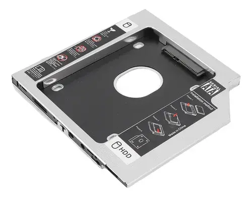
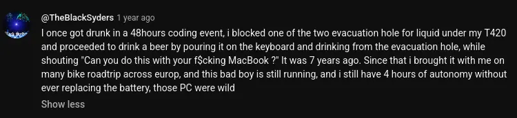
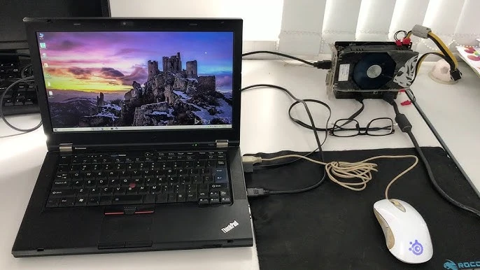

📚 Post que escrevi há um ano (Maio/2025) no blog antigo e estou repostando aqui porque sim.
Este post não tem nada de especial. Eu só quero deixar claro que meu laptop é superior.
Ótima compra
Como falei no último fechamento, comprei baratinho na internet
para ver se Thinkpads eram tão bons assim como dizem. Só paguei 990
reais neste computador do qual escrevo. Ele tem um processador i5-2520M
e veio com SSD e 10GB de RAM. Não são as specs mais modernas, mas para o
preço está ótimo. Um laptop novo com apenas i3 e 4gb RAM hoje custa uns
dois mil reais. Faz o L.
Restava saber o estado, visto que é um computador usado que acho que foi fabricado em 2011. Eu confiava que o modelo era bom, devido a todo o hype dos Thinkpads velhos, etc. Mas temia que poderia chegar todo fodido e quebrado.
Não veio fodido. Veio em excelente estado. Não perfeito, claro que não. Mas muito melhor do que eu esperava. Por fora tem uns arranhões. Poucos. E uma letra do LENOVO caiu. Mas por dentro me surpreendeu, veio quase novo. Até cheiro de novo tinha. Só algumas coisas vieram com problema:
- Veio sem o trackpoint.
- Bateria está viciada.
- Veio sem o trilho do HDD/SSD.
- A trava da tela não funciona.
Não ter trackpoint não afeta tanto, a maioria dos laptops não têm,
mas comprei um porque queria ver como era. A bateria eu já fui avisado
de antes e não me importo. Uso sempre na tomada. Não sei como encaixaram
o SSD sem o trilho, mas comprei um para colocar da maneira correta.
Novamente, a trava não afeta tanto, a maioria dos laptops não têm. Eu
não vou tentar consertar isso – tentei e consertei.
Correções e upgrades que fiz
A primeira coisa que fiz foi aumentar a RAM. Aumentei pra 12GB (8+4). Custo zero, usei o que já tinha.

A segunda coisa foi comprar um adaptador de HDD Bay ou seja lá qual for o nome disso. O T420 vem com um drive de CD, mas dá pra trocar por um adaptador desses e colocar um HDD, que foi o que fiz. Me custou 20 reais com o frete.
Eu tenho um SSD e um HDD nessa máquina, mas daria pra ter ainda mais. O T420 vem com um slot onde se pode adicionar um módulo para rede celular ou um SSD mSata. O meu veio com o módulo para rede celular. Dá pra adicionar um Chip SIM e usar a internet da operadora de celular com esse laptop, mas eu nunca vou usar isso e preferia o mSata.
Enfim, tudo isso pra dizer que dá pra ter um SSD mSata nesse slot, um SSD/HDD no slot padrão e um SSD/HDD extra no HDD Bay. Três drives em um laptop. Aqui está um exemplo de um cara fazendo isso. É storage que não acaba mais. Talvez eu compre um SSD mSata no futuro, mas por agora não preciso.
Outra coisa que fiz foi comprar o trackpoint. Não é muito fácil achar e poucos vendem isso, então eles metem a faca mesmo. Me custou 20 reais. Mas valeu a pena. Não tinha outra opção.
Comprei também o trilho do slot do HDD/SSD que veio sem. Está funcionando perfeitamente sem esse trilho, o vendedor colocou o SSD no slot sem ele de alguma forma, mas preferi comprar apenas para desencargo de consciência. Ainda nem coloquei. Me custou também uns 20 reais.
E Acabaram os custos. Laptop foi R$990, correções e upgrades - que nem eram tão necessários assim - foram uns R$60. Total de R$1’050 por este tanque de guerra pré-histórico.
Specs e possibilidades
Esse modelo tem algumas coisas que laptops modernos não têm mais, e algumas coisas que nem os antigos tinham.
Trackpoint
Todo laptop deveria ter isso. É meio difícil de se acostumar no primeiro dia, mas depois se torna muito mais prático do que o trackpad.
Talvez seja minha falta de costume, mas ainda acho menos preciso. Não é grande coisa e a praticidade supera isso. Desativei o trackpad e só uso o trackpoint hoje. Faz, creio, umas duas semanas que instalei o trackpoint e já estou 90% acostumado.
Leitor de digital
Honestamente eu considero isso uma viadagem, mas tem. Eu só usei uma vez para testar e funciona muito bem, mas não usei mais.
Trava da tampa
Infelizmente o meu veio quebrado e não irei consertar, mas
nesse modelo a tampa trava quando fecha e você tem que empurrar uma
travinha para abrir. Não sei se é útil, mas é certamente
interessante.
Tampa abre em 180°
Eu não sei o quão comum é isso, acho até que todos os laptops modernos devem ter esta função, mas o meu antigo não tinha e acho muito legal.
Killswitch de rádio
Esse é muito legal. Tem uma trava na lateral que desliga todo o rádio do computador: WiFi, Bluetooth e rede celular. O laptop fica air gapped. Eu sempre uso essa função antes de bootar no TailsOS para assinar alguma transação de Bitcoin.
Thinklight
Uma das coisas que mais gosto. O laptop tem uma luz de teclado que fica perto da webcam e, quando ligada, ilumina lindamente todo o teclado e o ambiente. É como um flash de celular. Muito melhor do que teclado RGB de LED gaymer.
Design e durabilidade
Algumas pessoas falam que os Thinkpads são feios, mas robustos. Eu discordo, acho a aparência deles muito elegante, eles têm classe. Feios são aquelas merdas slim sem alma.
Sobre durabilidade e resistência, ele realmente parece resistente. Li relatos de pessoas dizendo que derrubaram no chão com força e não quebrou. Mas laptop não foi feito pra cair e acho que as chances de quebrar são bem maiores.

Porta de cartão SD
Esse não é algo tão especial, meu laptop antigo tinha, mas os modernos não costumam ter e considero essencial. Também muito útil por ser algo que não ocupa espaço. Dá pra deixar um cartão SD lá e esquecer.
Porta USB sempre ligada
Eu nem sabia que isso existia, mas tem uma porta USB amarela que fornece energia mesmo com o computador desligado. Você pode usar seu computador como um power bank sem ter que ligar. Mas a minha não funciona, acredito que o motivo seja a bateria viciada.
Docking Station
Na parte de baixo do laptop tem um conector para encaixar em uma docking station. A ideia do dock é o seguinte: você carrega seu laptop na mochila para todo lugar, e, quando chegar em casa, conecta no dock. O dock pode ter HDDs extras (eu acho), tem várias portas extras e geralmente estão conectados à monitores, teclados e outros periféricos.
Demais portas
Laptops modernos são caros pra caralho, oferecem pouco, tem aquele design slim de merda e quase não têm portas, só USB e aquela porta gay da Apple. O T420, como todo laptop antigo, tem várias portas: HDMI, VGA, Ethernet, duas USB 2.0, um USB eSata, um USB sempre ligado, entrada de cartão SIM, entrada de cartão SD e Express Card.
Express Card

Eu nem sabia que isso existia, mas tem um slot vazio para Express Card. A ideia é que você compre um Express Card e coloque lá.
Esses tais Express Cards são extensões customizadas. Por exemplo, você pode comprar um Express Card com duas entradas USB e agora seu laptop tem duas entradas USB a mais.
O interessante é que dá pra comprar um Express Card que faz a conexão com uma GPU externa, algo que daria muito mais poder ao computador. Acredito que seria viável usar para rodar IA localmente, joguinhos ou trabalhar com coisas gráficas mais pesadas. Mas não acho que seja uma diferença tão absurda. E também não sei direito como funciona e nem se valeria a pena.
Upgrades futuros?
Talvez eu compre um SSD mSata no futuro. Talvez eu arrume um Express Card e uma GPU externa pra testar isso aí. Mas é bem talvez mesmo. Eu não preciso dessas coisas. Do jeito que está já está bom. Seria só por curiosidade.
Não é upgrade, é manutenção, mas acho que preciso trocar a pasta térmica. Esse processador esquenta demais. Vi que algumas pessoas trocam o heat sink do T420 por um melhor, mas ainda não pesquisei sobre e nem sei qual seria o preço. Por enquanto não vou fazer nada.
Recomendo?
Completamente. O laptop é muito bom e foi muito barato. O problema é que você não sabe o estado quando compra usado. Eu pedi para me mandarem um vídeo antes, arrisquei e deu certo. Eu fiquei tão satisfeito com a máquina que agora estou pensando em comprar algum da série X, que são menores. Mas no Bostil deve ser mais difícil de achar.
📅 Quinta, 16 de abril de 2026 às 07:00 por Odetra.
Regras dos comentários:
- Podem comentar qualquer coisa. Podem me xingar, reclamar, foda-se. Todos os comentários serão aprovados.
- Só não comentem coisas criminosas, ameaças e afins, nem compartilhem links suspeitos: o comentário não será aprovado e você será banido.
Powered by HtmlCommentBox.E tentem respeitar os amiguinhos.